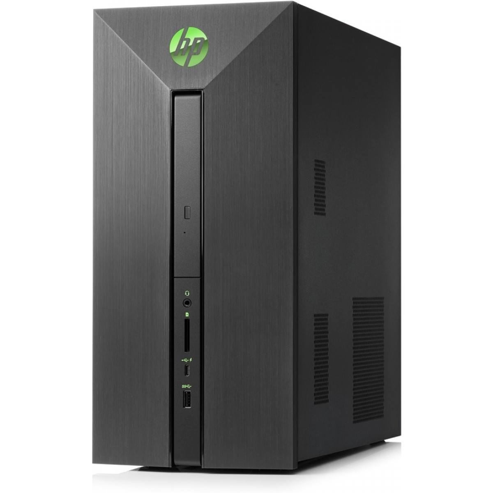

 Desktop PC met AMD Ryzen 5 1600 processor 16 Gb intern geheugen 1 Tb Hard Disk, Dropbox, 128 Gb SSD en DVD-writer 2 Gb NVIDIA GeForce GTX 1050 videokaart Wireless internet, DTS Studio Sound, Bluetooth 4.2 USB toetsenbord en optische muis Windows 10.
€749De MSI Nightblade MI3 7RA-055EU is geschikt voor het spelen van de meest recente games dankzij de krachtige kenmerken en gaming uitstraling. De snelle Intel Core i5 processor zorgt ervoor dat taken snel worden uitgevoerd, deze processor is geschikt voor het spelen van games. Door de combinate van de SSD- en harde schijf start je desktop snel op en beschik je over een ruime opslagcapaciteit. Dankzij de SSD en processor start de desktop binnen 15 seconden op. Bovendien werkt een SSD volledig stil en is het betrouwbaarder dan een traditionele harde schijf.
€799De Acer Aspire XC-780 I6618 NL is een compacte desktop, voorzien van een Intel Core i5-7400 processor met 8 GB intern geheugen. Daarnaast beschikt deze desktop over een 128 GB SSD. Windows start snel op en programma's werken vlot. De extra 1 TB harde schijf biedt voldoende ruimte voor al jouw bestanden. Je kunt deze desktop gebruiken voor: internetten, e-mailen, tekstverwerking en andere programma's. De desktop wordt geleverd inclusief usb-toetsenbord en usb muis.
€599De stijlvol opnieuw ontworpen, betrouwbare en veilige HP ProDesk 400 MT, die ontworpen is voor de moderne werkplek van nu en de toekomst, met een 27% kleinere behuizing dan HP's vorige generatie, is een krachtige pc met schaalbare prestaties die met uw bedrijf kan meegroeien. De HP ProDesk 400 MT, die ontworpen is voor de moderne werkplek, is een betrouwbare, gunstig geprijsde pc die met uw bedrijf meegroeit.
€499De MSI Infinite 8RC-055EU is geschikt voor het spelen van de meest recente games dankzij de krachtige kenmerken en gaming uitstraling. De krachtige Intel Core i7 processor zorgt ervoor dat taken snel worden uitgevoerd, waardoor de desktop geschikt is voor het werken met zwaardere toepassingen. Deze processor biedt de beste prestaties voor het spelen van games en foto- en videobewerking. Door de combinate van de SSD- en harde schijf start je desktop snel op en beschik je over een ruime opslagcapaciteit.
€1500De MSI Nightblade MI3 VR7RC-072EU is geschikt voor het spelen van de meest recente games dankzij de krachtige kenmerken en gaming uitstraling. De snelle Intel Core i5 processor zorgt ervoor dat taken snel worden uitgevoerd, deze processor is geschikt voor het spelen van games. Door de combinate van de SSD- en harde schijf start je desktop snel op en beschik je over een ruime opslagcapaciteit. Dankzij de SSD en processor start de desktop binnen 15 seconden op. Bovendien werkt een SSD volledig stil en is het betrouwbaarder dan een traditionele harde schijf.
€899De Erazer P46019 is een desktop die draait op een quad-core Intel Core i5-7400 processor. Door het werkgeheugen van 8 GB draait de desktop moeiteloos meerdere programma’s tegelijk. Daarnaast beschikt de Erazer P46019 over een 128 GB SSD waardoor de desktop binnen enkele seconden is opgestart. Verder heeft de desktop een AMD Radeon RX560 videokaart. De desktop is voorzien van Windows 10 Home.
€699Met de OMEN X 900-200nd ben je klaar voor strijd! Deze ultra krachtige gaming machine is gemaakt om de zwaarste games moeiteloos in ultra instellingen te spelen. Met de Intel Core i9 processor (met maar liefst 12 cores) is deze gaming bak letterlijk sneller dan het licht. De Nvidia GeForce GTX 1080 Ti zorgt ervoor dat je jouw favoriete games in 4k kan spelen. Zo zijn zelfs de kleinste details haarfijn zichtbaar. Wil je toch nog dichter op de actie zitten? sluit dan dan een VR bril aan en duik in een wereld van Virtual Reality.
€4499De MSI Trident 3 Arctic 7RA-284EU is een razendsnelle gaming-pc. Deze Arctic-versie van MSI valt gelijk op door zijn witte strakke uiterlijk. De PC kan je zowel horizontaal als verticaal plaatsen. Verder is de PC voorzien van een GeForce GTX 1050 waardoor je zonder enig probleem geniet van al je games. Met de SSD kaart start je games moeiteloos op en daarnaast beschikt de MSI Trident 3 Arctic 7RA-284EU ook over een 1 TB HDD voor de opslag van je overige bestanden.
€699